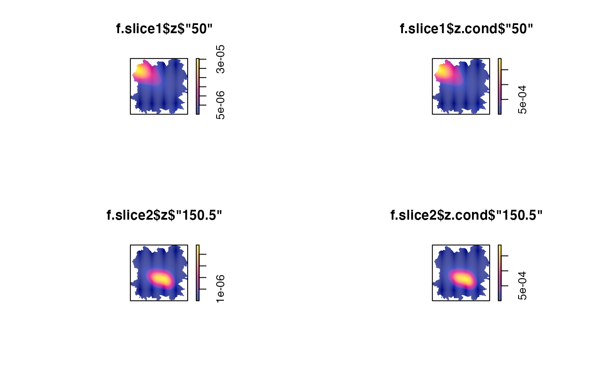
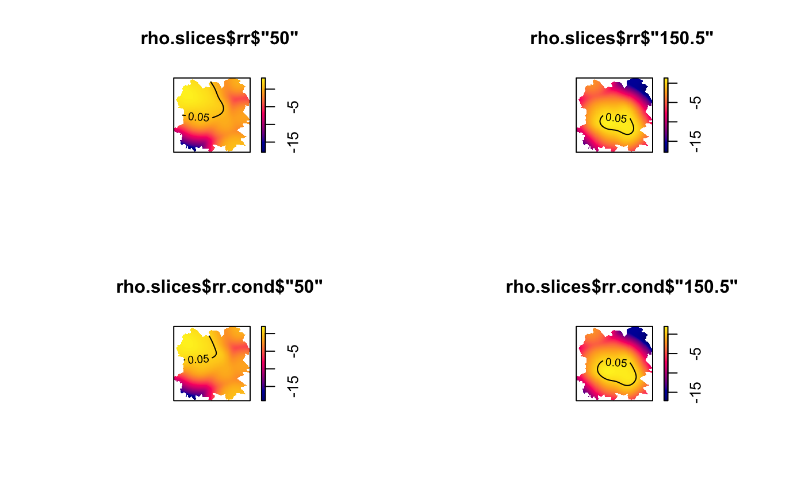

Takes slices of the spatiotemporal kernel density or relative risk function estimate at desired times
spattemp.slice(stob, tt, checkargs = TRUE)An object of class stden or rrst giving the spatiotemporal
estimate from which to take slices.
Desired time(s); the density/risk surface estimate
corresponding to which will be returned. This value must be in the
available range provided by stob$tlim; see `Details'.
Logical value indicating whether to check validity of
stob and tt. Disable only if you know this check will be
unnecessary.
A list of lists of pixel images, each of which corresponds to
the requested times in tt, and are named as such.
If stob is an object of class stden:
Pixel images of the joint spatiotemporal density corresponding to tt.
Pixel images of the conditional spatiotemporal density given each time in tt.
If stob is an object of class rrst:
Pixel images of the joint spatiotemporal relative risk corresponding to tt.
Pixel images of the conditional spatiotemporal relative risk given each time in tt.
Only present if tolerate = TRUE in the preceding call to spattemp.risk.
Pixel images of the \(p\)-value surfaces for the joint spatiotemporal relative risk.
Only present if tolerate = TRUE in the preceding call to spattemp.risk.
Pixel images of the \(p\)-value surfaces for the conditional spatiotemporal relative risk.
Contents of the stob argument are returned based on a discretised set of times.
This function internally computes the desired surfaces as
pixel-by-pixel linear interpolations using the two discretised times
that bound each requested tt.
The function returns an error if any of the
requested slices at tt are not within the available range of
times as given by the tlim
component of stob.
Fernando, W.T.P.S. and Hazelton, M.L. (2014), Generalizing the spatial relative risk function, Spatial and Spatio-temporal Epidemiology, 8, 1-10.
# \donttest{
data(fmd)
fmdcas <- fmd$cases
fmdcon <- fmd$controls
f <- spattemp.density(fmdcas,h=6,lambda=8)
#> Calculating trivariate smooth...
#> Done.
#> Edge-correcting...
#> Done.
#> Conditioning on time...
#> Done.
g <- bivariate.density(fmdcon,h0=6)
rho <- spattemp.risk(f,g,tolerate=TRUE)
#> Calculating ratio...
#> Done.
#> Ensuring finiteness...
#> --joint--
#> --conditional--
#> Done.
#> Calculating tolerance contours...
#> --convolution 1--
#> --convolution 2--
#> Done.
f$tlim # requested slices must be in this range
#> [1] 20 220
# slicing 'stden' object
f.slice1 <- spattemp.slice(f,tt=50) # evaluation timestamp
f.slice2 <- spattemp.slice(f,tt=150.5) # interpolated timestamp
par(mfrow=c(2,2))
plot(f.slice1$z$'50')
plot(f.slice1$z.cond$'50')
plot(f.slice2$z$'150.5')
plot(f.slice2$z.cond$'150.5')

# slicing 'rrst' object
rho.slices <- spattemp.slice(rho,tt=c(50,150.5))
par(mfrow=c(2,2))
plot(rho.slices$rr$'50');tol.contour(rho.slices$P$'50',levels=0.05,add=TRUE)
plot(rho.slices$rr$'150.5');tol.contour(rho.slices$P$'150.5',levels=0.05,add=TRUE)
plot(rho.slices$rr.cond$'50');tol.contour(rho.slices$P.cond$'50',levels=0.05,add=TRUE)
plot(rho.slices$rr.cond$'150.5');tol.contour(rho.slices$P.cond$'150.5',levels=0.05,add=TRUE)

# }